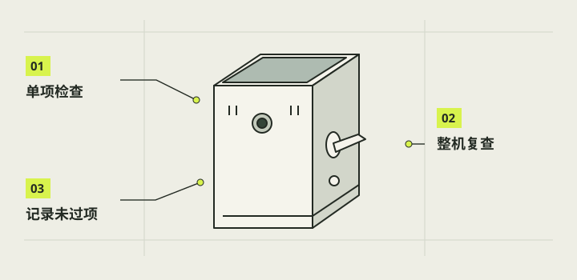

最终检验与问题排查
合上底盖只是开始验收。先在桌面完成开机、拍照、保存、导出、关机，再决定能否带出去；软件本地测试、切片检查和一次成功拍摄不能替代整机逐项记录。结果要写清设备组合、软件版本、日期与可复查证据。

本章完成目标
- 完成桌面基础拍摄闭环并保留原始证据
- 把机械、电气、软件与存储故障分别定位
- 只在桌面通过后开展户外场景测试
开始前准备好
- 第14章已完成断电装配和合盖前复查
- 当前供电、屏幕与相机连接已有对应实物记录
- 准备测试记录表和可用的照片备份位置
- 验收证据
- 能说明实际测试条件和结果的照片、原始文件、日志或测量记录。
- 复测
- 修复后在相同条件下重做失败项目，并记录前后差异。
- 桌面闭环
- 在安全工作台完成启动、成片保存、导出和正常关机的一次完整流程。
先做不通电的整机检查
查看镜头是否正对开口、屏幕边缘是否受压、底盖是否自然贴合，轻晃时是否有松件声。逐个确认16盖扣、Pi四角卡销、三根36长销、电池鞋键和拨杆防退出键；按键、拨杆与充电滑盖都应能按预期移动并返回。若用V31、G2或N3，分别检查薄壁、胶缝、卡爪和线根，但只把实际摸到、量到的结果记为实物证据。
注意 / 发现电池受压、线皮破损或卡件裂纹时不进入通电阶段。
记录实际运行版本后启动
按已核定的供电方式启动，观察屏幕、预览及退出桌面的状态，拍下异常并记录现场软件版本。1.0曾因会话目录权限回退；10月29日修复安装实机报告显示boot与session已配置，状态staged，仍待下一次正常开机和完整功能回归。旧版0.4自启动、白灯基本亮灭及关机再开机有用户反馈，不并作1.0验收。异常先记录，不盲目重装改线。
注意 / 本地测试不能代替实机开机。
用原始JPEG验证两种快门入口
在存储可写时，触屏拍照和实体拉杆各拍一张，再检查文件确实存在、能打开、方向正确且没有多拍。接着测保存忙碌时再按、取消自拍、存储未就绪和失败反馈；不能把提示成功却没有文件算通过。按A的草案核对比例、1×／2×和首次默认，但未冻结的次数与阈值保持待定。RAW与HDR入口若只是提示或普通拍照，不写成真实RAW、HDR已完成。
注意 / 单次拍照成功不等于全部P0通过。
验证导出与正常关机
把刚拍的原图按当前已验证的传输方式复制到电脑或手机，重新打开并对照文件数量与尺寸；若要做拔卡和Mac／Windows直读，须等对应存储流程单独验证，不能因Pi的ext4卡能写入就推断跨平台可读。确认保存结束后用既定电源流程正常关机，记录屏幕、指示灯和后续再次开机状态；勿把屏灭当成可取卡。
注意 / 写入未完或关机不明时不拔卡断电。
逐项测供电、热与可维护性
在短时使用后检查外壳、电池区域、充电口和Pi附近是否有异常热、异味、接头松动或屏幕闪烁；充电及放电只按已确认的电气方案进行。测试拨杆多次触发与回位、底盖开合和G2滑盖保持，不把一次顺利动作当耐久通过。记录无法量得的温度、续航、跌落和胶接保持力为待测，先确定测量方法和停止条件，再由实际测试更新。
注意 / 亮灯或屏灭不足以判断断电。
桌面通过后再做外出复测
先确认桌面开机、拍照、保存、导出、关机五项都有可复查通过记录，再去白天街景、朋友人像及室内、食物、建筑等目标场景。保存原始样片，由制作者审看色彩、清晰度、握持、屏幕可读和拍下一张的等待；性能数值按现场计时，不从电脑模拟推断。发现缺陷时记录版本、复现步骤、样片和环境，修复后只复测受影响项目并保留前后结果。
注意 / 户外成功不代表耐久与防护通过。
完成后，逐项打勾。
勾选帮助你记录进度，不代表项目替你完成了实机验收。
遇到问题，从这里排查。
预览正常却没有保存文件
保留屏幕与日志，核对存储就绪和路径权限，不先把问题归到镜头。
拨杆偶发两张或不回位
分开查机械卡滞、线束碰撞与软件去抖，分别记录触发时间和文件数。
导出照片在电脑打不开
先核原始JPEG是否完整，再核传输副本和读取方式；不先格式化卡。
本项目的实际进展
- A验收表是草案，整机未通过。
- 0.4自启动与白灯动作有反馈；1.0已配置待开机回归。
资料与核对依据
- A需求与验收登记 · camera-project/A-PRD/PRD.md
- C软件最新交接 · camera-project/C-软件/handoff.md
- New Cam 1.0功能状态 · camera-project/C-软件/pi-camera-1.0/feature-status.md
- 1.0权限修复后实机安装报告 · camera-project/C-软件/qa/newcam-1.0/device-reports/20261029-005057-v1-repair-install-summary-c43f833093b74b8883b4a79df80f5062.json
- 0.4自启动与白灯用户实测 · camera-project/C-软件/qa/r4-live-setup-20261026/用户实测结果.md
- F整机验收交接 · camera-project/F-验收/handoff.md
资料核对日期：2026-10-30。不同硬件、系统版本和材料需要重新验证。